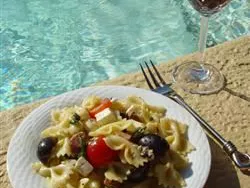

Chicken Pasta Salad

Description
This chicken pasta salad has all the flavors of a chicken club sandwich. Delicious!
Ingredients
- 8 ounces corkscrew-shaped pasta
- ¾ cup Italian-style salad dressing
- ¼ cup mayonnaise
- 2 cups chopped, cooked rotisserie chicken
- 12 slices crispy cooked bacon, crumbled
- 8 ounces cherry tomatoes, halved
- 1 cup cubed Muenster cheese
- 1 cup chopped celery
- 1 cup chopped green bell pepper
- 1 avocado - peeled, pitted, and chopped
Steps
- Gather all ingredients.
- Bring a large pot of lightly salted water to a boil. Cook pasta in the boiling water, stirring occasionally,
until tender yet firm to the bite, about 10 to12 minutes. Drain and rinse under cold water.
- Whisk Italian-style dressing and mayonnaise together in a large bowl.
- Stir in pasta, chicken, bacon, tomatoes,
cheese, celery, green bell pepper, and avocado until evenly coated.